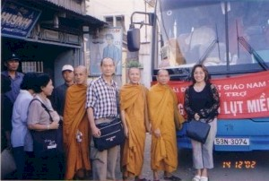
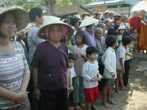
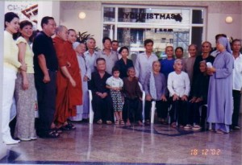

| Trang gốc |
Vietnamese, with Unicode Times font |
|
|
|
||||
|
Hành hương - 2002 Bình Anson,
-ooOoo-
1. Công tác cứu trợ từ thiện tại Việt Nam Q ua những trao đổi sơ bộ với Tỳ kheo Thiện Minh của chùa Kỳ Viên (Quận 3, TP HCM), chúng tôi có phác họa tổ chức một chuyến cứu trợ đồng bào bị nạn lũ lụt ở vùng châu thổ sông Cửu Long. Với sự giúp đỡ của một số đạo hữu, tôi đến chùa Quán Thế Âm trong thành phố Perth trình bày chương trình cứu trợ và kêu gọi đóng góp. Kết quả chỉ trong một buổi trưa, chúng tôi đã quyên góp được hơn một ngàn đô la Úc. Cho đến ngày lên đường, trong vòng khoảng 10 ngày, chúng tôi đã quyên góp được một số tiền tương đương với 33 triệu đồng VN.Thêm vào đó, qua mạng truyền thông Internet, tôi có liên lạc với một số bạn học cũ ở hải ngoại, đã từng hoạt động công tác xã hội từ thời trung học (cựu học sinh các trường Trương Vĩnh Ký, Chu Văn An, Trưng Vương, và Gia Long) và một số Phật tử độc giả của trang Phật học BuddhaSasana, để kêu gọi đóng góp. Kết quả là chúng tôi nhận được thêm một ngân khoản tương đương với 40 triệu đồng VN. Như thế, tổng cộng số tiền đóng góp cho công tác cứu trợ là 73 triệu đồng. Với số tiền đó, chúng tôi nhờ Sư Thiện Minh và một vài anh chị Phật tử ở Sài Gòn bố trí thêm cho các công tác cứu trợ từ thiện khác. Khi về đến Sài Gòn, qua đề nghị của chùa Kỳ Viên, chúng tôi trích 3 triệu đồng để làm 10 học bổng cấp cho các em học sinh nghèo trong Phường 3, Quận 3, ở gần chùa. Buổi lễ phát học bỗng được tổ chức đơn giản vào buổi chiều ngày 13 tháng 12, 2002, tại chùa, với sự tham dự của Tỳ kheo Tăng Định - vị trụ trì chùa Kỳ Viên, Tỳ kheo Thiện Minh, Tỳ kheo Chánh Định (trụ trì chùa Tam Phước, Long Thành), Ni sư Huệ Từ (Phó Trưởng Ban Từ Thiện Xã Hội, GHPGVN), ban đại diện Phường, một số thân hữu và Phật tử của chùa. Sáng hôm sau, ngày 14 tháng 12, chúng tôi lên đường đi An Giang để thực hiện công tác cứu trợ. Đoàn cứu trợ do Tỳ kheo Thiện Pháp, trụ trì chùa Thiền Quang I, Long Thành, hướng dẫn, với sự tham dự của một số tăng ni từ các chùa trong hệ phái Nam tông: Tỳ kheo Thiện Minh (chùa Kỳ Viên, quận 3), Tỳ kheo Bửu Hiền (trụ trì chùa Pháp Bảo, Mỹ Tho), Tỳ kheo Minh Tịnh (chùa Thanh Long, Bình Dương), Tỳ kheo Chánh Định (chùa Tam Phước, Long Thành), Tỳ kheo Tuệ Dũng (chùa Trúc Lâm, Phú Lâm), Sư cô Diệu Hiền (chùa Diệu Quang, Tân Bình) và Sư cô Viên Dung (chùa Trúc Lâm). Ngoài các Phật tử chùa Kỳ Viên, tôi có mời thêm hai thân hữu Việt kiều Tây Úc, các bạn học cũ của khoá Kỹ sư Hóa Học thuộc Viện Kỹ Thuật Quốc Gia ngày trước (nay là Đại học Bách khoa TP HCM), các bạn học cũ từ thời trung học, và hai đạo hữu trong nhóm biên tập thư viện điện tử BuddhaSasana. Đặc biệt nhất, có sự tham gia của Nghệ sĩ Bạch Tuyết, một Phật tử thuần thành và rất nhiệt tình trong các công tác từ thiện xã hội. Xe khởi hành từ 5 giờ sáng. Trên đường đi, ngồi trong xe, chúng tôi được Sư Thiện Minh hướng dẫn để xin thọ trì Tam Quy và Ngũ Giới. Sau đó, chúng tôi mời chị Bạch Tuyết trình bày về các hoạt động âm nhạc Phật Giáo của chị, nhất là về quá trình hình thành đĩa CD Trường ca Cải lương Lời Phật Dạy - Kinh Pháp Cú. Tôi cũng có trình bày sơ lược về các hoạt động Phật sự tại Tây Úc và các nơi khác trên xứ Úc, về trang web Phật giáo trên mạng Internet và đĩa CD Thư viện điện tử BuddhaSasana. Vượt qua nhánh sông Tiền - qua cầu treo Mỹ Thuận, và sông Hậu - bằng phà Vàm Cống, chúng tôi đến thị xã Châu Đốc. Tại bến đò, chúng tôi cùng nhau chuyển các tặng phẩm xuống đò để đi đến xã Vĩnh Hội Đông, huyện An Phú, giáp biên giới Campuchia. Với sự giúp đỡ của các viên chức địa phương, chúng tôi phân phát tặng phẩm đến 200 gia đình nghèo trong vùng. Tặng phẩm cho mỗi gia đình gồm có một bao gạo, một thùng mì gói, nước tương, mền, quần áo, thuốc tây, và một bao thơ trong đó có 50 ngàn đồng tiền mặt. Anh Cẩn, Việt kiều Tây Úc, có tặng thêm 50 ngàn đồng trong một bao thơ khác. Ngoài ra, đồng bào còn được thưởng thức các bài ca cải lương do chị Bạch Tuyết hát tặng. Trong xe trên đường về, qua đề nghị của Sư Thiện Minh, các bạn trong đoàn đã tham gia thảo luận các đề tài căn bản Phật Pháp rất sôi nổi, hào hứng. Khi xe gần đến ngoại ô thành phố Sài Gòn, Sư Thiện Minh hướng dẫn chúng tôi tụng các bài kinh hồi hướng công đức do các hoạt động thiện lành trong ngày. Tôi về đến nhà gần nữa đêm, thân thể mệt nhoài nhưng tinh thần rất phấn chấn và hoan hỷ. Qua sự giới thiệu của một chị Phật tử, tôi đến gặp ban đại diện Hội Bảo trợ Bệnh nhân Nghèo và trao một số tiền là 10 triệu đồng VN để tài trợ chi phí phẫu thuật cho 20 em bé bị dị tật sứt môi khe hở hàm ếch, trong Chương trình "Vì nụ cười trẻ thơ", TP HCM. Ngoài chương trình nầy, Hội còn có nhiều chương trình từ thiện khác để giúp đỡ bệnh nhân nghèo ở nhiều nơi trong nước. Hai ngày sau đó, cùng với Tỳ kheo Thiện Minh, Tỳ kheo Tuệ Quyền và Tỳ kheo Chánh Định, chúng tôi đến bệnh viện Mắt, đường Cao Thắng. Qua sự giới thiệu của Ni sư Huệ Từ, chúng tôi trao 10 triệu đồng VN để tài trợ chi phí phẫu thuật, thay thủy tinh thể, cho 20 đồng bào nghèo, trong Chương trình "Đem lại ánh sáng cho người mù", TP HCM. Trưa ngày 21 tháng 12, gia đình chúng tôi cùng đi với Sư Thiện Minh và anh chị Châu, Phật tử chùa Kỳ Viên, đến thăm Trường Nuôi Dạy Trẻ Mồ Côi, chùa Pháp Võ, Huyện Nhà Bè. Nơi đây, quý ni cô đang nuôi dạy gần 200 em bé gái đủ mọi lứa tuổi. Chúng tôi trao quà bánh kẹo cho các em - trị giá 1 triệu đồng, và gửi một số tiền là 4 triệu đồng vào quỹ điều hành trường.
Sau đó, Sư Thiện Minh đưa chúng tôi đến thăm Trường Nuôi Dạy Thanh Thiếu Niên Khiếm Thị và Khuyết Tật, chùa Kỳ Quang, Quận Gò Vấp. Chúng tôi đến từng gian phòng, thăm hỏi các em và trao quà bánh kẹo - trị giá tổng cộng 1 triệu đồng, và gửi lại một số tiền là 4 triệu đồng đóng góp vào quỹ điều hành trường. Một ngày trước khi rời Sài Gòn sang Bangkok, chúng tôi đến chùa Kỳ Viên từ giả quý Sư. Chúng tôi gửi lại 5 triệu đồng để đóng góp phần tiền mặt cho chuyến cứu trợ sắp tới tại tỉnh Lâm Đồng, ủy lạo đồng bào dân tộc, do chùa tổ chức. Được biết mỗi năm, chùa có tổ chức 5 hoặc 6 chuyến cứu trợ tương tự tại nhiều nơi trong nước, và các hoạt động từ thiện xã hội khác, tùy theo nhu cầu. Đồng thời, chúng tôi cũng gửi lại 5 triệu đồng để nhờ chùa tổ chức tặng quà Tết cho đồng bào nghèo trong vùng thuộc Quận 3. (Xin xem thêm bản báo cáo tóm tắt ở Phần 4) Địa chỉ li ên lạc:1) Chùa Kỳ Viên, 2) Chùa Pháp Võ
(Trường Nuôi Dạy Trẻ Mồ Côi) 3) Chùa Kỳ Quang
(Trường Nuôi Dạy Thanh Thiếu Niên Khiếm Thị và Khuyết Tật) 4) Hội Bảo trợ Bệnh nhân Nghèo
(Chương trình "Vì nụ cười trẻ thơ") -ooOoo- [Trở
về trang Thư Mục] |